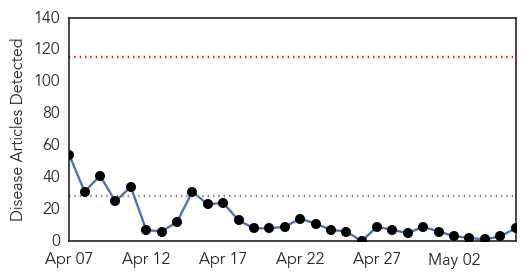
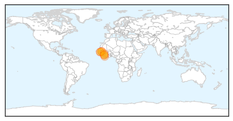

30 Day Trends
Web: 0 alerts, 0 warnings
Twitter: 0 alerts, 0 warnings
Top Articles:
- 1.000
- Ebola Virus Disease in West Africa 231 Cases, 155 Deaths
- 1.000
- Senegal re-opens border with Guinea as Ebola threat eases
- 0.999
- Senegal re-opens border with Guinea as Ebola threat eases
- 0.999
- As Ebola Virus Slows in West Africa, Senegal Reopens Border to Guinea
- 0.999
- Ebola Outbreak Is Now 'Under Control'; Senegal Re-Opens Border With Guinea
- 0.997
- Senegal re-opens border with Guinea as Ebola threat eases
- 0.994
- MSF says Ebola fever not eradicated in Guinea
- 0.936
- Senegal reopens border with Guinea - Africa
Top Tweets:
-
No tweets found for May 06, 2014
Web/News Articles
Tweets

Article Locations
Article Confidences